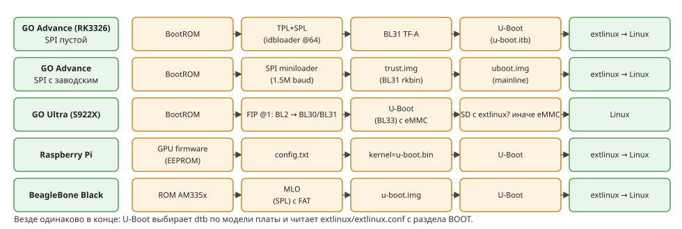
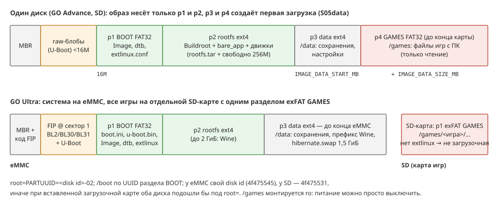

2. Загрузка и разметка дисков
Цепочки загрузки

Общее для всех плат: U-Boot определяет модель, выбирает dtb и читает
extlinux/extlinux.conf с раздела BOOT, а ядро монтирует корень по
root=PARTUUID=<disk id>-02. Отличается только то, как до U-Boot добирается
BootROM:
- GO Advance (RK3326). BootROM сначала смотрит в SPI-флеш. У Black Edition
там с завода recovery-загрузчик Hardkernel (DDR-блоб + miniloader, лог на 1,5 Мбод,
который CP2102 не читает), поэтому образ гибридный (
RK_LEGACY := y): тот же mainline U-Boot упакован и какu-boot.itbдля открытой цепочки TPL → SPL → TF-A, и какuboot.img+trust.img(BL31 из rkbin) для miniloader. Грузится и так, и так. Таблица разделов — MBR: GPT пересеклась бы с окружением U-Boot на 16K. - GO Ultra (S922X). BootROM берёт загрузчик с сектора 1 сначала eMMC, потом
SD. Образ несёт свой FIP: BL2/BL30/BL31 Amlogic (блобы LibreELEC, скачиваются при
сборке — лицензия запрещает их класть в git) + mainline U-Boot как BL33. Пока на
eMMC заводской загрузчик, он выполняет
boot.iniс карты и чейнлоадит нашu-boot.bin. После записи нашего FIP на eMMC (make flash-emmc) U-Boot всегда идёт с eMMC, а Linux — с SD, если на ней естьextlinux.conf, иначе с eMMC. - Raspberry Pi — прошивка GPU читает
config.txtи запускаетu-boot.bin. - BeagleBone Black — ROM →
MLO→u-boot.imgс FAT.
Подробности каждой платы — 8. Платы.
Разметка дисков

Образ (make image) содержит только MBR, raw-блобы загрузчика, p1 BOOT
(FAT32: ядро, dtb, extlinux) и p2 rootfs (ext4). Разделов данных в образе
нет — их создаёт при первой загрузке /etc/init.d/S05data
(board/common/buildroot/rootfs-overlay):
| Раздел | Метка | Где | Для чего |
|---|---|---|---|
| p3 ext4 | data |
/data |
всё, что пишется на плате: сохранения, настройки, префикс Wine, журналы, файл гибернации |
| p4 FAT32 | GAMES |
/games |
файлы игр, скопированные с ПК; только если задан IMAGE_DATA_SIZE_MB |
Начало p3 задаёт IMAGE_DATA_START_MB, конец — IMAGE_DATA_SIZE_MB (или конец
диска). rootfs должен кончаться раньше — это проверяет mkimage.sh. После
make flash в таблице снова только p1 и p2, но скрипт находит на прежних местах
файловые системы data и GAMES и подключает их без форматирования: оба
раздела переживают перепрошивку. Раздел с другой ФС скрипт не трогает.
Две схемы
- GO Advance — всё на одной SD: p3
data1 ГБ с 4096 МиБ, p4GAMESдо конца. - GO Ultra — система и
/dataна eMMC (p3 до конца eMMC, раздела игр нет), все игры на отдельной SD-карте с одним разделом exFATGAMES. На карте нетextlinux.conf, поэтому U-Boot её пропускает и грузит систему с eMMC, аS05dataмонтирует её на/games. Карту можно менять; вставленная после загрузки подключится после перезагрузки.
Форматирование карты игр (Linux): sudo mkfs.exfat -c 32K -L GAMES /dev/sdX1 —
кластер 32 КиБ вместо 128 по умолчанию, мелких файлов у игр много. Windows и
macOS: обычный exFAT с меткой GAMES. FAT32 тоже подходит, но файлы больше 4 ГБ
туда не лягут (у DOOM 3 BFG ресурсы большие).
Когда разделов игр два
Если у платы есть и свой p4, и карта, их объединяет /usr/sbin/games-mount:
разделы монтируются в /run/games/0 и /run/games/1, а /games — tmpfs из
символических ссылок. Каталог, который есть в обоих, становится настоящим
каталогом с файлами обоих (так карта может добавить base/maps к DOOM 3 на
eMMC); при совпадении имён берётся файл первого. overlayfs не подходит: он не
принимает FAT и exFAT. Имена сравниваются без регистра, как на FAT.
/games только для чтения
/games всегда монтируется ro, чтобы выключение питания не оставляло FAT
«грязной». Писать с платы: games-mount rw, потом games-mount ro
(карту — mount -o remount,rw /run/games/1). Игры этого не знают: сохранения у
них идут в /data, а Wine-игры, пишущие в свой каталог, получают копию
(writable в wine.ini, см. 4. Игры).
USB-диск
Без извлечения карты раздел игр можно открыть компьютеру по USB-C:
/usr/sbin/usb-disk start отмонтирует /games и добавляет к работающему
USB-гаджету (S42usbnet, сеть остаётся) функцию mass storage; компьютер видит
съёмный диск GAMES. usb-disk status замечает, что компьютер извлёк диск,
usb-disk stop проверяет ФС (fsck.exfat -p / fsck.fat -a) и монтирует обратно.
В bare_app это экран «USB-диск» (GO Ultra): раздел открыт, пока открыт экран, и
возвращается сам после извлечения на компьютере. Запись ~11 МБ/с, поэтому для
больших игр быстрее картридер. «Выключить» в «Дисках» GNOME отключает всё
USB-устройство вместе с сетью — тогда B дважды на приставке.
Сеть по USB-C (GO Ultra)
S42usbnet делает из порта сетевую карту (NCM): приставка — 192.168.7.2,
компьютер получает 192.168.7.1 по DHCP без шлюза. Дальше ssh root@192.168.7.2
по ключу из board/common/buildroot/authorized_keys (файл не в git: положите
свой открытый ключ до make rootfs; у root нет пароля, и dropbear без ключа не
пустит). Ключ хоста dropbear создаётся заново после каждой записи образа.
scripts/ogu-ctl.py ходит по этой сети.
Первая загрузка
S05dataсоздаёт/data(и/gamesтам, где он на том же диске), находит карту игр.S03mdevв фоне грузит модули;S30audio(GO Ultra) ставит маршрут DPCM звуковой карты;S31clockберёт время из RTC RK818;S06hibernateготовит файл гибернации.S<INIT_ORDER>bare-appзапускает лаунчер: на GO AdvanceS06— сразу после данных, до сети (Wi-Fi подхватится позже); на GO UltraS90.
До меню bare_app: ~3,7 с на GO Ultra, ~5 с на GO Advance (раздел «Быстрая загрузка» в 8. Платы).